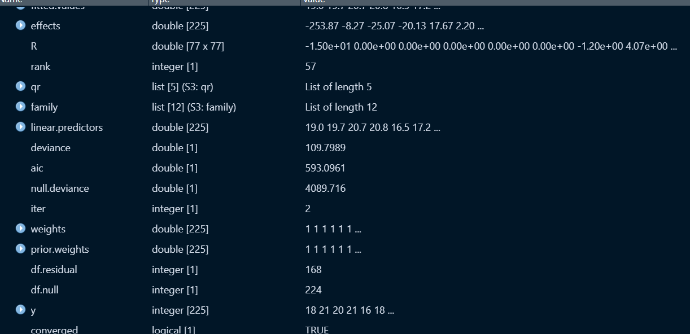
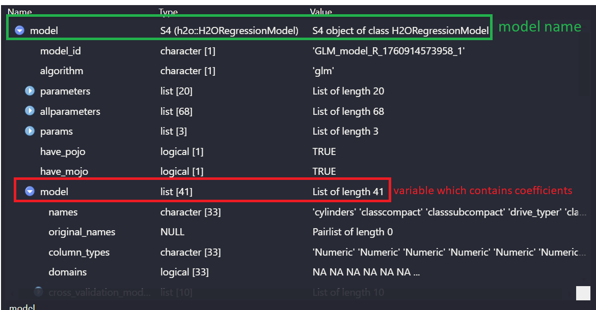

# A tibble: 234 × 11
manufacturer model displ year cyl trans drv cty hwy fl class
<chr> <chr> <dbl> <int> <int> <chr> <chr> <int> <int> <chr> <chr>
1 audi a4 1.8 1999 4 auto… f 18 29 p comp…
2 audi a4 1.8 1999 4 manu… f 21 29 p comp…
3 audi a4 2 2008 4 manu… f 20 31 p comp…
4 audi a4 2 2008 4 auto… f 21 30 p comp…
5 audi a4 2.8 1999 6 auto… f 16 26 p comp…
6 audi a4 2.8 1999 6 manu… f 18 26 p comp…
7 audi a4 3.1 2008 6 auto… f 18 27 p comp…
8 audi a4 quattro 1.8 1999 4 manu… 4 18 26 p comp…
9 audi a4 quattro 1.8 1999 4 auto… 4 16 25 p comp…
10 audi a4 quattro 2 2008 4 manu… 4 20 28 p comp…
# ℹ 224 more rows
displ - Engine displacemeent, measured in liters. Displacement roughly tells you how much air/fuel mixture the engine can burn in one cycle — higher displacement typically means more power but also higher fuel consumption.
year - Year of manufacture
cyl - Number of cylinders in the engine.
trans - Transmission type.
drv - The drive type. It can be front-wheel, rear-wheel or 4-wheel drive car.
cty - City miles per gallon (mpg), meaning fuel efficiency when driving in city conditions (lower speeds, more stops).
hwy - Highway miles per gallon (mpg), efficiency during highway driving (steady speeds, less stopping).
class - Vehicle type/category, e.g. ‘compact’, ‘suv’, ‘midsize’ and etc.
In this project, I will build Linear Regression model to predict the cty based on the remaining features. So, the target variable is cty. Let’s for simplicity, readibility and interpretability, rename the columns and make them clean and meaningful.
# print(inspect_na(df)) # same with miss_var_summary() with slight column name change.
According to the results, the data doesn’t have any missing values. Therefore, I will not apply any imputation method.
3. Duplicates in the data:
sum(duplicated(df))
[1] 9
There are 9 duplicated rows in the data. Let’s see those rows:
df[duplicated(df), ]
# A tibble: 9 × 11
manufacturer model displacement year cylinders transmission_type drive_type
<chr> <chr> <dbl> <int> <int> <chr> <chr>
1 chevrolet c1500 … 5.3 2008 8 auto(l4) r
2 dodge carava… 3.3 1999 6 auto(l4) f
3 dodge carava… 3.3 2008 6 auto(l4) f
4 dodge dakota… 4.7 2008 8 auto(l5) 4
5 dodge durang… 4.7 2008 8 auto(l5) 4
6 dodge ram 15… 4.7 2008 8 auto(l5) 4
7 dodge ram 15… 4.7 2008 8 manual(m6) 4
8 ford explor… 4 1999 6 auto(l5) 4
9 honda civic 1.6 1999 4 auto(l4) f
# ℹ 4 more variables: city_mpg <int>, highway_mpg <int>, fuel_type <chr>,
# class <chr>
When looking at the results, it is seen that the rows are don’t identical to each other. That may confuse us, but be attentive, because these are the copies of the original rows. If it is required to see all duplicated rows including both of thee original and copies, then it is required to write additional parameter fromLast = TRUE. That will give all the duplicates.
# A tibble: 6 × 11
manufacturer model displacement year cylinders transmission_type drive_type
<chr> <chr> <dbl> <int> <int> <chr> <chr>
1 chevrolet c1500 … 5.3 2008 8 auto(l4) r
2 chevrolet c1500 … 5.3 2008 8 auto(l4) r
3 dodge carava… 3.3 1999 6 auto(l4) f
4 dodge carava… 3.3 1999 6 auto(l4) f
5 dodge carava… 3.3 2008 6 auto(l4) f
6 dodge carava… 3.3 2008 6 auto(l4) f
# ℹ 4 more variables: city_mpg <int>, highway_mpg <int>, fuel_type <chr>,
# class <chr>
Let’s remove the duplicated rows now keeping only one of them and removing the copies.
# df <- distinct(df) # tidyverse librarydf <- df[!duplicated(df),] # base R
Re-check the number of duplicates to see if any duplicated left:
sum(duplicated(df))
[1] 0
4. Outliers in the data.
We have three methods to define the outliers: box-plot, Z-score and IQR method. Let’s start with box-plot method to visually see if any outliers exist:
To find the multicollinearity between variables, we need to generate a formula which has the following structure: target ~ feature1 + feature2 + feature3 + ... + featuren which means dependency of the target on [feature1,feature2,,,]. Then, that formula is sent to the glm() function, which is Generalized Linear Model.
# define your target, firstlytarget <-'city_mpg'# define the featuresfeatures <- df %>%select(-all_of(target)) %>%names()# generate the structure of the formula and convert it to formula dtypef <-paste(target, paste(features, collapse =" + "), sep =" ~ ") %>%as.formula()# build the linear generalized model based on the structured formula. It accepts the formula and apply it on data.glm <-glm(f, data = df)# to beautifully see the model results/structure, we can use tidy function of broom librarytidy(glm) %>%head()
The question may appear that what is the relationship between glm model and multicollinearity. For multicollinearity, we need to find VIF (variance inflation score) value for each feature. If the VIF value is greater than 5 then it is a sign of high (perfect) multicollinearity. faraway::vif() function accepts the predictors matrix for the features; glm() function returns the predictors matrix alongside the coefficients. You can investigate the returned results by glm function on the Environment tab in RStudio.

glm %>%vif() %>%sort(decreasing =TRUE)
Error in vif.lm(.): Model has non-identifable parameters
As is seen, the code returned an error. glm() function returns NA as a coefficient. We need to find those features and remove them to find VIF score for them.
# alias function will return the features that have perfect multicollinearity# attributes function will return rows and columns of the matrices, dataframes. It will return dimnames[[1]] which represents rows, dimnames[[2]] which represents columnscoef_na <-attributes(alias(glm)$Complete)$dimnames[[1]]features <- features[!features %in% coef_na]coef_na
We can see from the results that some columns have very high VIF scores, even more than 10. In practice, the features with VIF score higher than 5 are considered as highly multicollinear and they must be removed in linear models. To do that, iteratively obtain the VIF score and remove the features which has more than 5 VIF score. We should do it in while loop because after removing some pairs (or members) of multicollinear features, the VIF score of remaining columns will change. Now remove the highly multicollinear features one by one, iteratively.
while(glm %>%vif() %>%sort(decreasing =TRUE) %>% .[1] >5){ vif_scores <- glm %>%vif() %>%sort(decreasing =TRUE)if(length(vif_scores) <=1) break# Stop if only 1 feature left features_afterVIF <-names(vif_scores)[-1] features_afterVIF <-make.names(features_afterVIF) f <-paste(target, paste(features_afterVIF, collapse =" + "), sep =" ~ ") %>%as.formula() glm <-glm(f, data = df)}
Now assign the remaining features with no multicollinearity to the features variable.
Firstly, initialize the h2o model and convert tibbles (dataframes) to h2o data type. Because, that package is built on another programming languages, and requires its special data format to increase the speed.
h2o.init()h2o.no_progress()
h2o_data <- df %>%as.h2o()
After conversion, split the data into train and test size with the ratio of 0.8 (20 % being test set).
While working with the VIF scores, glm() function is used to build the linear model. h2o library also builds the linear models with glm() function in a following way:
Fitted model generated the intercept and coefficients of the prediction formula. We can explore it in the Environment tab in RStudio.

Each feature has its assigned coefficient together with the p-value which indicates how significant (useful) that feature was in prediction. We can eliminate the features with insignificant p value (>0.05), because they don’t have effective role on the prediction. We can investigate the features, coefficients and corresponding p-values using the following formula:
These are our train results. We did not predict on the test data. For predictions, we want to have only significant and useful features on our hand, thus insignificant features should be removed.
while (model@model$coefficients_table %>%as.data.frame() %>%select(names, p_value) %>% .[-1,] %>%arrange(desc(p_value)) %>% .[1,2] >0.05) {# condition tells: convert coefficiens table into data.frame; then select names and p_value form it;# exclude the first row which corresponds to intercept# sort the rows in the decreasing order of p_value which leads to higher p_values placing at the top# take the first-row & second-column which corresponds to the highest p-value in the filtered tibble# and check if it is insignificant.# If no insignificant feature is left, the while loop will end! model@model$coefficients_table %>%as.data.frame() %>%select(names,p_value) %>%mutate(p_value =round(p_value,3)) %>%filter(!is.nan(p_value)) %>% .[-1,] %>%#exclude the first row - interceptarrange(desc(p_value)) %>% .[1,1] -> insign_feature features <- features[features!= insign_feature] # remove insignificant feature features_ <-gsub("`", "", features) train = train %>%as.data.frame() %>%select(target, features_) %>%as.h2o() test = test %>%as.data.frame() %>%select(target, features_) %>%as.h2o()# re-build the model with changed train - test sets model <-h2o.glm(x = features, y = target, training_frame = train, validation_frame = test,nfolds =10, seed =123,lambda =0, compute_p_values = T )}
Re-observe the features and their corresponding p_values again:
Firstly, find the errors (residuals) which is equal to difference between actual test data and predicted values.
test_data <- test %>%as.data.frame() residuals <- test_data$city_mpg - y_pred$predict
Calculate Root Mean Squared Error RMSE:
RMSE =sqrt(mean(residuals^2))
Calculate R2:
y_test_mean =mean(test_data$city_mpg)tss =sum((test_data$city_mpg - y_test_mean)^2) #total sum of squaresrss =sum(residuals^2) #residual sum of squaresR2 =1- (rss/tss)R2
[1] 0.8430277
Calculate Adjusted R2:
n <- test_data %>%nrow() k <- features %>%length()Adjusted_R2 =1-(1-R2)*((n-1)/(n-k-1))Adjusted_R2
Overfitting is a problem that the model can predict on the train data quite well - fits properly to the train data, however, performs worse on the test data. It means the model just follows the path of the train data instead of learning and generalizing it. Evidence of the overfitting problem is comparison of metrics on both train and test data. If the R2 (or Adjusted R2) is high on train data, but quite lower on the test data then it is obvious evidence of overfitting problem. If both metrics are low, then it will be called underfitting problem which means the model did not learn anything and hence can not predict well.